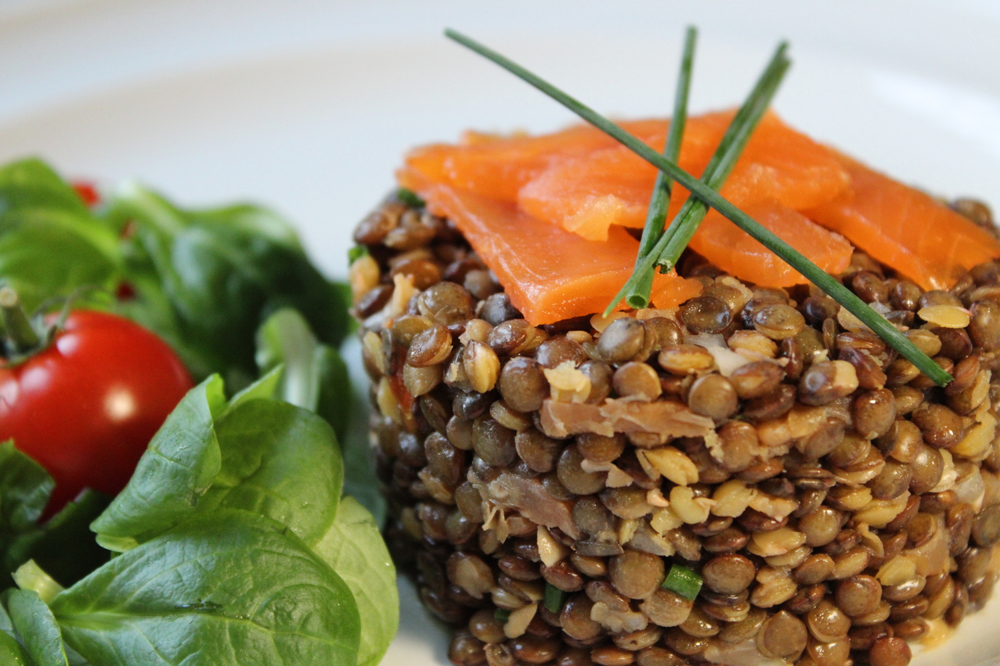
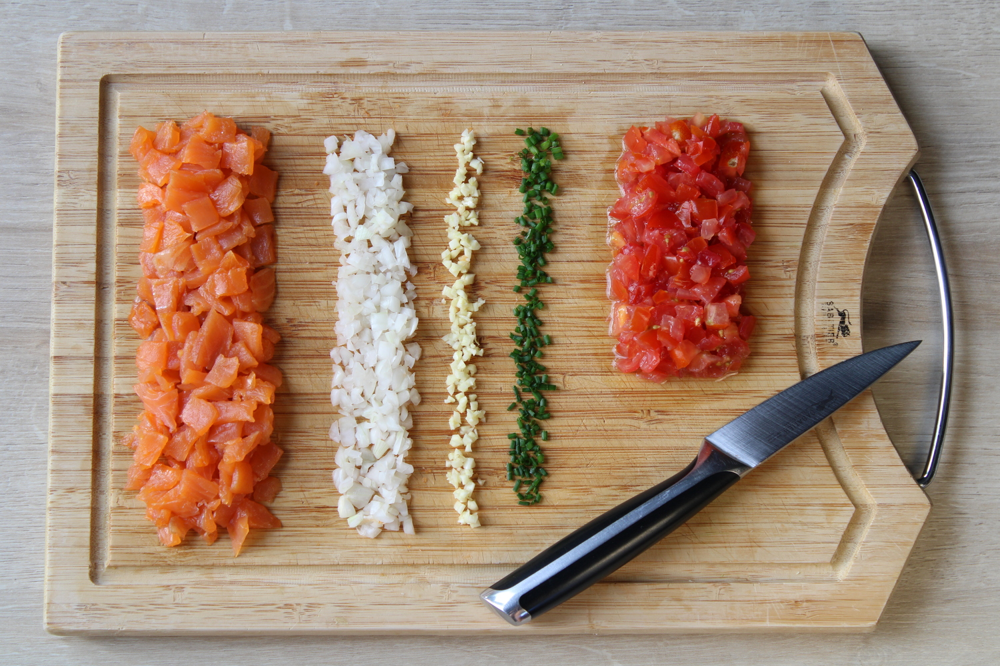
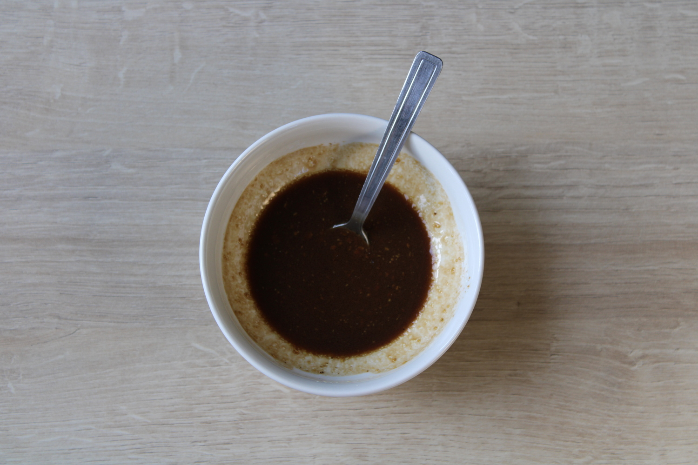
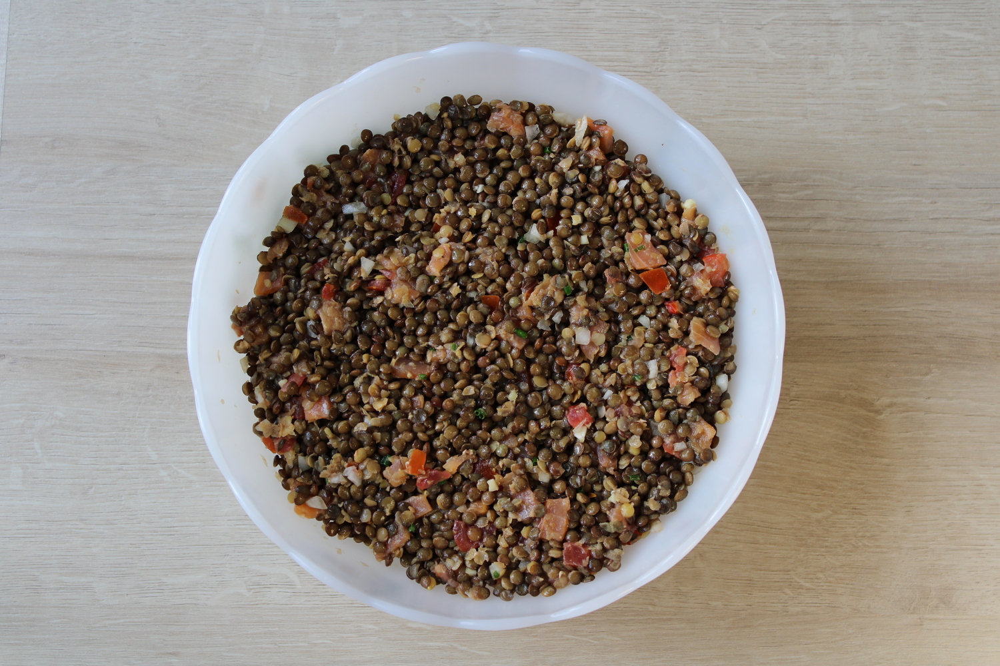
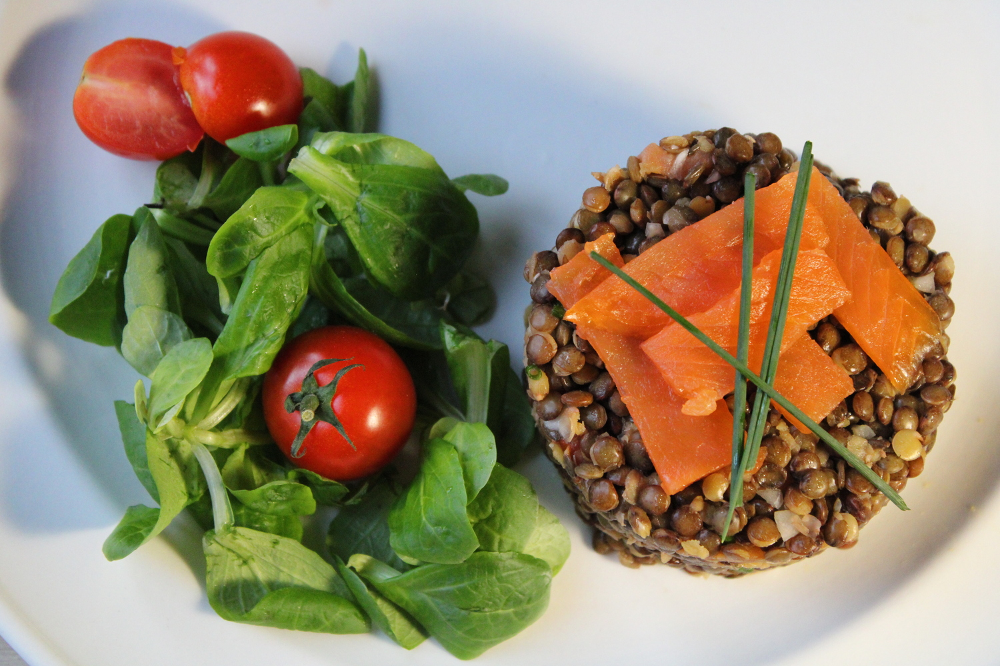

Salade de lentilles au saumon 
Cette salade est idéale l'été lorsqu'il fait chaud. À la fois rafraîchissante, nourrissante et saine, elle est rapide à préparer, le plus long étant de cuire les lentilles. On peut donc facilement en préparer en grandes quantités, de quoi régaler toute la famille !
| Temps total | Préparation | Cuisson | Niveau | Personnes |
|---|---|---|---|---|
| 30 min | 10 min | 18 à 20 min | Facile | 4 à 6 (un saladier) |
Ingrédients
| Lentilles vertes | 320 g (2 verres) |
| Saumon fumé (ou truite fumée) | 2 ou 3 tranches |
| Tomate | 1 |
| Gousse d'ail | 1 |
| Oignon blanc (ou échalotte) | 1 |
| Ciboulette | 4 brins |
| Vinaigrette | 1 bol |
Préparation
- Rincez les lentilles à l'eau froide. Portez 2L d'eau à ébullition dans une casserole, ajoutez les lentilles puis couvrez. Laissez cuire à feu doux pendant 18 à 20 minutes.
- Pendant ce temps, coupez le saumon en petits morceaux. Pelez puis ciselez l'ail et l'oignon. Ciselez la ciboulette et coupez la tomate en dés. 
- Pour faire la sauce vinaigrette, dans un bol, mélangez la moutarde avec le vinaigre basalmique et l'huile d'olive. Après avoir obtenu un mélange homogène, salez et poivrez. 
- Une fois les lentilles cuites, les égoutter puis les verser dans un saladier. Rajoutez le saumon, l'ail, l'oignon, la ciboulette et les tomates. Ajoutez la sauce vinaigrette puis mélangez. Mettez la préparation au frigidaire afin de la déguster bien fraîche.  Vous pouvez dresser la salade de lentilles à l'aide d'un cercle ou en verrines. 
Mon conseil

Pour bien apprécier cette salade, il faut qu'elle ait eu le temps de refroidir donc je vous conseille de la laisser au frigidaire au moins 2 ou 3 heures avant de servir.